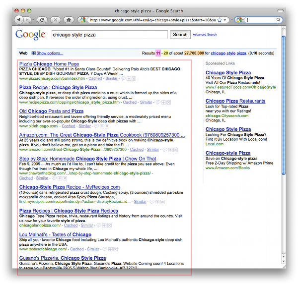
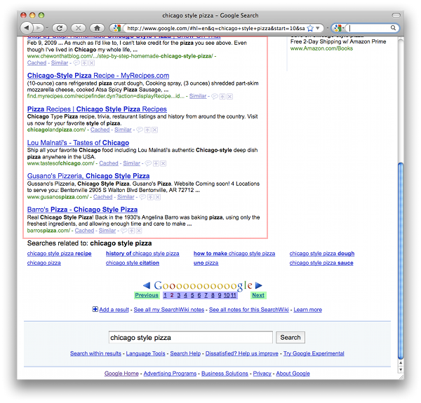

Google JSON Style Guide
Revision 0.9
Hooray! Now you know you can expand points to get more details. Alternatively, there's an "expand all" at the top of this document.
This style guide documents guidelines and recommendations for building JSON APIs at Google. In general, JSON APIs should follow the spec found at JSON.org. This style guide clarifies and standardizes specific cases so that JSON APIs from Google have a standard look and feel. These guidelines are applicable to JSON requests and responses in both RPC-based and REST-based APIs.
For the purposes of this style guide, we define the following terms:
- property - a name/value pair inside a JSON object.
- property name - the name (or key) portion of the property.
- property value - the value portion of the property.
Javascript's number type encompasses all floating-point numbers, which is a broad designation. In this guide, number will refer to JavaScript's number type, while integer will refer to integers.
Comments should not be included in JSON objects. Some of the examples in this style guide include comments. However this is only to clarify the examples.
If a property requires quotes, double quotes must be used. All property names must be surrounded by double quotes. Property values of type string must be surrounded by double quotes. Other value types (like boolean or number) should not be surrounded by double quotes.
Data elements should be "flattened" in the JSON representation. Data should not be arbitrarily grouped for convenience.
In some cases, such as a collection of properties that represents a single structure, it may make sense to keep the structured hierarchy. These cases should be carefully considered, and only used if it makes semantic sense. For example, an address could be represented two ways, but the structured way probably makes more sense for developers:
Flattened Address:
Structured Address:
Property names must conform to the following guidelines:
- Property names should be meaningful names with defined semantics.
- Property names must be camel-cased, ascii strings.
- The first character must be a letter, an underscore (_) or a dollar sign ($).
- Subsequent characters can be a letter, a digit, an underscore, or a dollar sign.
- Reserved JavaScript keywords should be avoided (A list of reserved JavaScript keywords can be found below).
These guidelines mirror the guidelines for naming JavaScript identifiers. This allows JavaScript clients to access properties using dot notation. (for example, result.thisIsAnInstanceVariable). Here's an example of an object with one property:
The property name naming rules do not apply when a JSON object is used as a map. A map (also referred to as an associative array) is a data type with arbitrary key/value pairs that use the keys to access the corresponding values. JSON objects and JSON maps look the same at runtime; this distinction is relevant to the design of the API. The API documentation should indicate when JSON objects are used as maps.
The keys of a map do not have to obey the naming guidelines for property names. Map keys may contain any Unicode characters. Clients can access these properties using the square bracket notation familiar for maps (for example, result.thumbnails["72"]).
Details about reserved property names, along with the full list, can be found later on in this guide. Services should avoid using these property names for anything other than their defined semantics.
Arrays usually contain multiple items, and a plural property name reflects this. An example of this can be seen in the reserved names below. The items property name is plural because it represents an array of item objects. Most of the other fields are singular.
There may be exceptions to this, especially when referring to numeric property values. For example, in the reserved names, totalItems makes more sense than totalItem. However, technically, this is not violating the style guide, since totalItems can be viewed as totalOfItems, where total is singular (as per the style guide), and OfItems serves to qualify the total. The field name could also be changed to itemCount to look singular.
New properties may be added to the reserved list in the future. There is no concept of JSON namespacing. If there is a naming conflict, these can usually be resolved by choosing a new property name or by versioning. For example, suppose we start with the following JSON object:
If in the future we wish to make ingredients a reserved word, we can do one of two things:
1) Choose a different name:
2) Rename the property on a major version boundary:
null.
The spec at JSON.org specifies exactly what type of data is allowed in a property value. This includes booleans, numbers, Unicode strings, objects, arrays, and null. JavaScript expressions are not allowed. APIs should support that spec for all values, and should choose the data type most appropriate for a particular property (numbers to represent numbers, etc.).
Good:
Bad:
null values.
If a property is optional or has an empty or null value, consider dropping the property from the JSON, unless there's a strong semantic reason for its existence.
As APIs grow, enum values may be added, removed or changed. Using strings as enum values ensures that downstream clients can gracefully handle changes to enum values.
Java code:
JSON object:
As mentioned above, property value types must be booleans, numbers, strings, objects, arrays, or null. However, it is useful define a set of standard data types when dealing with certain values. These data types will always be strings, but they will be formatted in a specific manner so that they can be easily parsed.
Dates should be strings formatted as recommended by RFC 3339
Time duration values should be strings formatted as recommended by ISO 8601.
Latitude/Longitude should be strings formatted as recommended by ISO 6709. Furthermore, they should favor the ±DD.DDDD±DDD.DDDD degrees format.
In order to maintain a consistent interface across APIs, JSON objects should follow the structure outlined below. This structure applies to both requests and responses made with JSON. Within this structure, there are certain property names that are reserved for specific uses. These properties are NOT required; in other words, each reserved property may appear zero or one times. But if a service needs these properties, this naming convention is recommended. Here is a schema of the JSON structure, represented in Orderly format (which in turn can be compiled into a JSONSchema). You can few examples of the JSON structure at the end of this guide.
The JSON object has a few top-level properties, followed by either a data object or an error object, but not both. An explanation of each of these properties can be found below.
The top-level of the JSON object may contain the following properties.
Parent: -
Represents the desired version of the service API in a request, and the version of the service API that's served in the response. apiVersion should always be present. This is not related to the version of the data. Versioning of data should be handled through some other mechanism such as etags.
Example:
Parent: -
Client sets this value and server echos data in the response. This is useful in JSON-P and batch situations , where the user can use the context to correlate responses with requests. This property is a top-level property because the context should present regardless of whether the response was successful or an error. context differs from id in that context is specified by the user while id is assigned by the service.
Example:
Request #1:
Request #2:
Response #1:
Response #2:
Common JavaScript handler code to process both responses:
Parent: -
A server supplied identifier for the response (regardless of whether the response is a success or an error). This is useful for correlating server logs with individual responses received at a client.
Example:
Parent: -
Represents the operation to perform, or that was performed, on the data. In the case of a JSON request, the method property can be used to indicate which operation to perform on the data. In the case of a JSON response, the method property can indicate the operation performed on the data.
One example of this is in JSON-RPC requests, where method indicates the operation to perform on the params property:
Parent: -
This object serves as a map of input parameters to send to an RPC request. It can be used in conjunction with the method property to execute an RPC function. If an RPC function does not need parameters, this property can be omitted.
Example:
Parent: -
Container for all the data from a response. This property itself has many reserved property names, which are described below. Services are free to add their own data to this object. A JSON response should contain either a data object or an error object, but not both. If both data and error are present, the error object takes precedence.
Parent: -
Indicates that an error has occurred, with details about the error. The error format supports either one or more errors returned from the service. A JSON response should contain either a data object or an error object, but not both. If both data and error are present, the error object takes precedence.
Example:
The data property of the JSON object may contain the following properties.
Parent:
data
The kind property serves as a guide to what type of information this particular object stores. It can be present at the data level, or at the items level, or in any object where its helpful to distinguish between various types of objects. If the kind object is present, it should be the first property in the object (See the "Property Ordering" section below for more details).
Example:
Parent:
data
Represents the fields present in the response when doing a partial GET, or the fields present in a request when doing a partial PATCH. This property should only exist during a partial GET/PATCH, and should not be empty.
Example:
Parent:
data
Represents the etag for the response. Details about ETags in the GData APIs can be found here: https://code.google.com/apis/gdata/docs/2.0/reference.html#ResourceVersioning
Example:
Parent:
data
A globally unique string used to reference the object. The specific details of the id property are left up to the service.
Example:
Parent:
data (or any child element)
Indicates the language of the rest of the properties in this object. This property mimics HTML's lang property and XML's xml:lang properties. The value should be a language value as defined in BCP 47. If a single JSON object contains data in multiple languages, the service is responsible for developing and documenting an appropriate location for the lang property.
Example:
Parent:
data
Indicates the last date/time (RFC 3339) the item was updated, as defined by the service.
Example:
Parent:
data (or any child element)
A marker element, that, when present, indicates the containing entry is deleted. If deleted is present, its value must be true; a value of false can cause confusion and should be avoided.
Example:
Parent:
data
The property name items is reserved to represent an array of items (for example, photos in Picasa, videos in YouTube). This construct is intended to provide a standard location for collections related to the current result. For example, the JSON output could be plugged into a generic pagination system that knows to page on the items array. If items exists, it should be the last property in the data object (See the "Property Ordering" section below for more details).
Example:
The following properties are located in the data object, and help page through a list of items. Some of the language and concepts are borrowed from the OpenSearch specification.
The paging properties below allow for various styles of paging, including:
- Previous/Next paging - Allows user's to move forward and backward through a list, one page at a time. The
nextLinkandpreviousLinkproperties (described in the "Reserved Property Names for Links" section below) are used for this style of paging. - Index-based paging - Allows user's to jump directly to a specific item position within a list of items. For example, to load 10 items starting at item 200, the developer may point the user to a url with the query string
?startIndex=200. - Page-based paging - Allows user's to jump directly to a specific page within the items. This is similar to index-based paging, but saves the developer the extra step of having to calculate the item index for a new page of items. For example, rather than jump to item number 200, the developer could jump to page 20. The urls during page-based paging could use the query string
?page=1or?page=20. ThepageIndexandtotalPagesproperties are used for this style of paging.
An example of how to use these properties to implement paging can be found at the end of this guide.
Parent:
data
The number of items in this result set. Should be equivalent to items.length, and is provided as a convenience property. For example, suppose a developer requests a set of search items, and asks for 10 items per page. The total set of that search has 14 total items. The first page of items will have 10 items in it, so both itemsPerPage and currentItemCount will equal "10". The next page of items will have the remaining 4 items; itemsPerPage will still be "10", but currentItemCount will be "4".
Example:
Parent:
data
The number of items in the result. This is not necessarily the size of the data.items array; if we are viewing the last page of items, the size of data.items may be less than itemsPerPage. However the size of data.items should not exceed itemsPerPage.
Example:
Parent:
data
The index of the first item in data.items. For consistency, startIndex should be 1-based. For example, the first item in the first set of items should have a startIndex of 1. If the user requests the next set of data, the startIndex may be 10.
Example:
Parent:
data
The total number of items available in this set. For example, if a user has 100 blog posts, the response may only contain 10 items, but the totalItems would be 100.
Example:
Parent:
data
A URI template indicating how users can calculate subsequent paging links. The URI template also has some reserved variable names: {index} representing the item number to load, and {pageIndex}, representing the page number to load.
Example:
Parent:
data
The index of the current page of items. For consistency, pageIndex should be 1-based. For example, the first page of items has a pageIndex of 1. pageIndex can also be calculated from the item-based paging properties: pageIndex = floor(startIndex / itemsPerPage) + 1.
Example:
Parent:
data
The total number of pages in the result set. totalPages can also be calculated from the item-based paging properties above: totalPages = ceiling(totalItems / itemsPerPage).
Example:
The following properties are located in the data object, and represent references to other resources. There are two forms of link properties: 1) objects, which can contain any sort of reference (such as a JSON-RPC object), and 2) URI strings, which represent URIs to resources (and will always be suffixed with "Link").
Parent:
data
The self link can be used to retrieve the item's data. For example, in a list of a user's Picasa album, each album object in the items array could contain a selfLink that can be used to retrieve data related to that particular album.
Example:
Parent:
data
The edit link indicates where a user can send update or delete requests. This is useful for REST-based APIs. This link need only be present if the user can update/delete this item.
Example:
Parent:
data
The next link indicates how more data can be retrieved. It points to the location to load the next set of data. It can be used in conjunction with the itemsPerPage, startIndex and totalItems properties in order to page through data.
Example:
Parent:
data
The previous link indicates how more data can be retrieved. It points to the location to load the previous set of data. It can be used in conjunction with the itemsPerPage, startIndex and totalItems properties in order to page through data.
Example:
The error property of the JSON object may contain the following properties.
Parent:
error
Represents the code for this error. This property value will usually represent the HTTP response code. If there are multiple errors, code will be the error code for the first error.
Example:
Parent:
error
A human readable message providing more details about the error. If there are multiple errors, message will be the message for the first error.
Example:
Parent:
error
Container for any additional information regarding the error. If the service returns multiple errors, each element in the errors array represents a different error.
Example:
Parent:
error.errors
Unique identifier for the service raising this error. This helps distinguish service-specific errors (i.e. error inserting an event in a calendar) from general protocol errors (i.e. file not found).
Example:
Parent:
error.errors
Unique identifier for this error. Different from the error.code property in that this is not an http response code.
Example:
Parent:
error.errors
A human readable message providing more details about the error. If there is only one error, this field will match error.message.
Example:
Parent:
error.errors
The location of the error (the interpretation of its value depends on locationType).
Example:
Parent:
error.errors
Indicates how the location property should be interpreted.
Example:
Parent:
error.errors
A URI for a help text that might shed some more light on the error.
Example:
Parent:
error.errors
A URI for a report form used by the service to collect data about the error condition. This URI should be preloaded with parameters describing the request.
Example:
Properties can be in any order within the JSON object. However, in some cases the ordering of properties can help parsers quickly interpret data and lead to better performance. One example is a pull parser in a mobile environment, where performance and memory are critical, and unnecessary parsing should be avoided.
kind should be the first property
Suppose a parser is responsible for parsing a raw JSON stream into a specific object. The kind property guides the parser to instantiate the appropriate object. Therefore it should be the first property in the JSON object. This only applies when objects have a kind property (usually found in the data and items properties).
items should be the last property in the data object
This allows all of the collection's properties to be read before reading each individual item. In cases where there are a lot of items, this avoids unnecessarily parsing those items when the developer only needs fields from the data.
This sample is for illustrative purposes only. The API below does not actually exist.
Here's a sample Google search results page:


Here's a sample JSON representation of this page:
Here's how each of the colored boxes from the screenshot would be represented (the background colors correspond to the colors in the images above):
- Results 11 - 20 of about 2,700,000 = startIndex
- Results 11 - 20 of about 2,700,000 = startIndex + currentItemCount - 1
- Results 11 - 20 of about 2,700,000 = totalItems
- Search results = items (formatted appropriately)
- Previous/Next = previousLink / nextLink
- Numbered links in "Gooooooooooogle" = Derived from "pageLinkTemplate". The developer is responsible for calculating the values for {index} and substituting those values into the "pageLinkTemplate". The pageLinkTemplate's {index} variable is calculated as follows:
- Index #1 = 0 * itemsPerPage = 0
- Index #2 = 2 * itemsPerPage = 10
- Index #3 = 3 * itemsPerPage = 20
- Index #N = N * itemsPerPage
The words below are reserved by the JavaScript language and cannot be referred to using dot notation. The list represents best knowledge of keywords at this time; the list may change or vary based on your specific execution environment.
From the ECMAScript Language Specification 5th Edition
Except as otherwise noted, the content of this page is licensed under the Creative Commons Attribution 3.0 License, and code samples are licensed under the Apache 2.0 License.
Revision 0.9